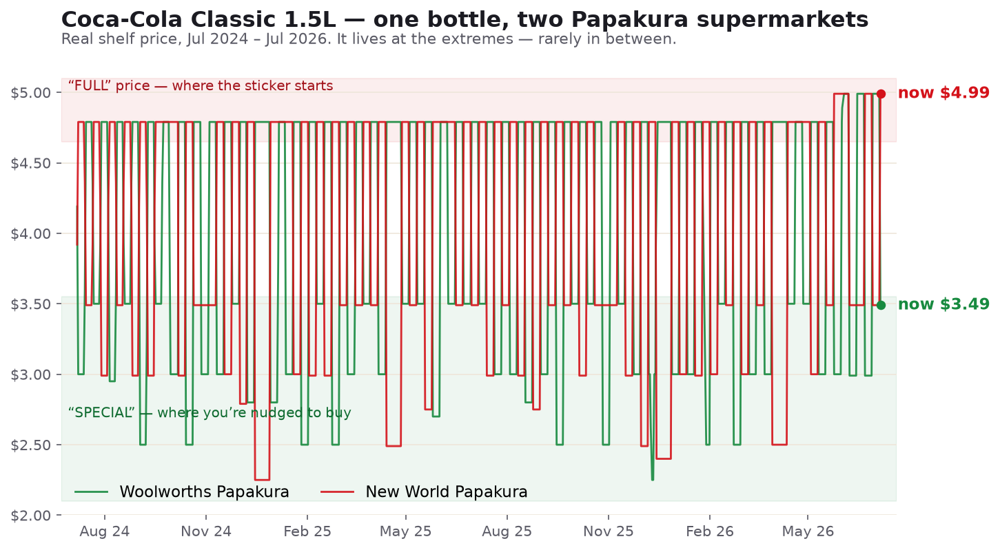

Two years of real shelf prices for one bottle at two "competing" supermarkets a few kilometres apart, from grocer.nz public price history. Part of stream #61 — supermarket price & promotion transparency.

| Store | Now (Jul 2026) | 2-yr range | 2-yr avg | Data points |
|---|---|---|---|---|
| Woolworths Papakura | $3.49 | $2.25 – $4.99 | $3.96 | 715 |
| New World Papakura | $4.99 | $2.25 – $4.99 | $3.95 | 723 |
Both stores cycle the same bottle endlessly between a ~$4.79–$4.99 "full" price and $2.25–$3.50 "specials" — identical floor, identical ceiling, and a near-identical two-year average (~$3.95) across a supposed duopoly. They're simply caught at different points in the cycle: right now New World sits at the full $4.99 while Woolworths is mid-cycle at $3.49. The "special" is effectively the default state, and the "regular" price is the one you rarely actually pay — the exact "was/now" mechanic the Commerce Commission and the Fair Trading Act are concerned with.
Source: grocer.nz public price history (product 6655; stores 118 Woolworths Papakura, 307 New World Papakura). Prices are recorded shelf prices at each store; a per-store snapshot is a claim about that store at that time. Analysis and small cited examples only — not a bulk republication of Grocer data. Generated for The For Good Project · github.com/thecolab-ai/the-for-good-project.